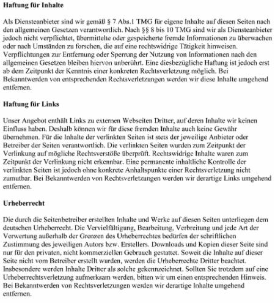

Kulturhaus Süderelbe e.V. * Am Johannisland 2 * 21147 Hamburg |
| Anmeldungen und Infos: Tel.: 040 - 796 72 22 Fax: 040 - 796 00 48 Email: info@kulturhaus-suederelbe.de Büro: Mo bis Fr 09:30 bis 14:30 Uhr, außer Mi |
Anmeldeformular finden Sie hier zum Download
Kontodaten:
Konto Nr.: 1087 210 793, IBAN: DE25200505501087210793 bei der
Haspa, BLZ: 200 505 50, BIC: HASPDEHHXXX
| Jan Pastoors, Dipl.-Ing., Geschäftsführung info@kulturhaus-suederelbe.de |
| Dörte Ellerbrock, Hauptamtl. Mitarbeiterin, künstlerische Leitung, Kursleitung, Projekte, Vernetzung, Öffentlichleitsarbeit doerte.ellerbrock@kulturhaus-suederelbe.de |
| Marketta Eksymä-Winkelmann, Kultur- und Bildungsmanagerin, Hauptamtl. Mitarbeiterin, Büro, Administration, Kursanm. marketta.eksymae@kulturhaus-suederelbe.de |
| Zum Team gehören auch alle Kurs- und ProjektleiterInnen im Rahmen des Kulturhaus-Angebtotes, die oft weit über den vereinbarten Umfang ehrenamtlich bei der Programmplanung und bei Realisierung und Durchführung einzelner Veranstaltungen mitwirken. Herzlichen Dank auch an alle Vereinsmitglieder für ihren großen ehrenamtlichen Einsatz und Unterstützung! Antragsformular auf Mitgliedschaft in userem Verein finden Sie hier zum Download: |
Der Vereinsvorstand (Ehrenämter): |
| Hannelore Bobeck-Nicculescu, 2. Vorsitzender |
| Stephan Kaiser, 1. Vorsitzender |
| Winfried Wöhlke, Schatzmeister |
Impressum:
Kulturhaus Süderelbe e.V.
Vereinsregister: Amtsgericht Hamburg, VR Nr. 8326
Vertretungsberechtigt: Hannelore Bobeck-Niculescu, Stephan Kaiser
Steuernr. 17/432/05266, Finanzamt Hamburg-Nord
Webseite: Leila Marketta Eksymä und Dörte Ellerbrock
Verantwortlich im Sinne des Pressegesetzes:
Hannelore Bobeck-Niculsecu, Stephan Kaiser
Alle Angaben auf dieser Internetseite dienen nur der Information. Sie erheben weder
Anspruch auf Vollständigkeit, noch auf Richtigkeit. Änderungen bleiben vorbehalten.
Haftungsauschuss:
|  |